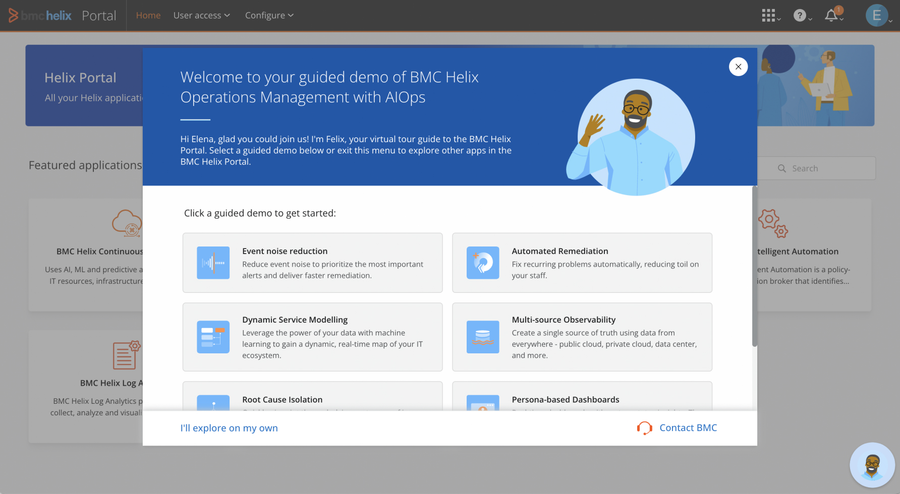

Improved onboarding
Users struggled with mixed guided content and UI elements. We modified the KC bot to prevent confusion with a real agent chat. We added video-based guidance, step-by-step overlays, and tooltips. These changes made onboarding smoother and reduced user friction.
KC bot


Reflection & Takeaways
This project reinforced the importance of research, iteration, and collaboration. Rapid prototyping and testing helped refine the experience. Working with stakeholders ensured a balance between technical constraints and design impact.